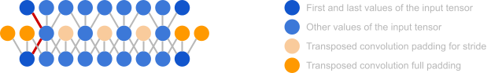
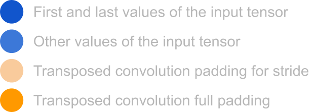

A short introduction to the RAVE model
A short introduction to RAVE model proposed by the paper RAVE: A variational autoencoder for fast and high-quality neural audio synthesis.
Introduction
This post is a short introduction to the RAVE model proposed by the paper RAVE: A variational autoencoder for fast and high-quality neural audio synthesis.
The RAVE model is a variational autoencoder trained in two stages:
First the regular variational autoencoder training,
Followed by an additional adversarial training stage for the decoder.
Training
Stage 1: Regular variational autoencoder training
The first stage is a regular variational autoencoder training which, as a remainder, aims at maximizing the following quantity (see the variational autoencoder post):
\(ELBO = E_{q_{\phi}(z|x)}\lbrack log\ p_{\theta}(x|z)\rbrack - KL(q_{\phi}(z|x)\ ||\ p(z))\)
which gives for the loss
\(\mathcal{L}_{VAE} = - E_{q_{\phi}(z|x)}\lbrack log\ p_{\theta}(x|z)\rbrack + KL(q_{\phi}(z|x)\ ||\ p(z))\)
For the reconstruction part, the RAVE paper proposes to use the spectral distance from the DDSP: Differentiable Digital Signal Processing paper:
\(S(x,y) = \sum_{n\ \in \ N}^{}\left\lbrack \frac{{||{\ STFT}_{n}(x)\ - \ {STFT}_{n}(y)\ ||}_{F}}{{||{\ STFT}_{n}(x)\ \ ||}_{F}} + log({||{\ STFT}_{n}(x) - {STFT}_{n}(y)\ ||}_{1}) \right\rbrack\)
where
\(N\) is a set of scales
\({\ STFT}_{n}\) is the amplitude of the Short-Term Fourier Transform with
Window size \(n\)
Hop size \(n/4\)
\({||\ .\ ||}_{F}\) is the Frobenius norm
\({||\ .\ ||}_{1}\) is the \(L_{1}\) norm
As explained in the RAVE paper, this amplitude spectrum-based distance does not penalize the model for inaccurately reconstructed phase, but encompasses important perceptual features about the signal.
Stage 2: Adversarial decoder training
The second stage aims at improving the synthesized audio quality by training the decoder using an adversarial objective (the encoder is frozen).
Following the Generative Adversarial Networks framework, a discriminator \(D\) is introduced.
The decoder and the discriminator are trained with the following objectives
\(L_{discriminator}(x,z) = max(0,1 - D(x)) + E_{\widehat{x} \sim p(x|z)}max(0,1 + D(\widehat{x}))\)
\(L_{generator}(z) = \ - E_{\widehat{x} \sim p(x|z)}\lbrack\ D(\widehat{x})\ \rbrack\)
The authors also proposes to
Keep minimizing the spectral distance \(S(x,\widehat{x})\).
Add the feature matching loss \(L_{FM}\) proposed in MelGAN: Generative Adversarial Networks for Conditional Waveform Synthesis.
This gives the final decoder objective
- \(L_{total}(x,z) = L_{generator}(z) + E_{\widehat{x} \sim p(x|z)}\lbrack S(x,\widehat{x}) + L_{FM}(x,\widehat{x})\rbrack\)
Notes about the phase
The spectral distance does not directly force the model to reproduce the phase of the input audio signal. However, the model is encouraged to produce plausible phase in two ways:
The fact that the spectral distance is computed at multiple scales.
- The only way to reproduce the correct magnitude patterns across multiple STFT window sizes is to generate time-domain signals with realistic, coherent phase.
The adversarial loss.
The discriminator doesn’t directly evaluate the phase but it evaluates if the output signal is realistic.
To fool the discriminator, the decoder must learn to produce phase-coherent signals because inconsistent or unnatural phase (e.g. “swishy”, “metallic”, “blurry” artifacts) would be easy to detect.
Model architecture
Encoder
The encoder of RAVE is a 1D convolutional neural network with \(N\) input channels (see the original implementation here).
In order to improve the model speed, the RAVE paper performs a multiband decomposition of the raw waveform before feeding it to the encoder.
It uses a 16-band decomposition, hence \(N = 16\) and the encoder has \(N = 16\) input channels.
In order to preserve the time alignment between the encoder inputs and the decoder outputs, all the convolutional layers use half padding (also called `same` padding).
- See Time alignment between inputs and outputs for more details.
No downsampling along the temporal axis is introduced by the convolutions with a unit stride (stride = 1).
However, convolutions with a non unit stride (stride > 1) do introduce downsampling along the temporal axis.
The outputs of the encoder are of dimension 256. They are split in two vectors each of dimension 128 that represent the mean and variance of the posterior distribution respectively.
As a summary, the inputs and outputs of the encoder of RAVE are:
Type Length Dimension Input Raw audio waveform 65536 samples 16 (16-band decomposition) Output Latent vectors 512 256 (128 mean + 128 variance)
Decoder
The decoder of RAVE is composed of 1D transposed convolutions and residual connections.
It produces outputs of the same length and dimension as the input.
Time alignment between inputs and outputs
The figures below show why using a half padding (or “same” padding) is necessary to maintain the time alignment between the inputs and outputs of the RAVE model.
Both figures show an encoder-decoder architecture with the following layers:
Encoder layer
Convolution
\(stride = 2\)
\(kernel\ size = 3\)
Decoder layer
Transposed convolution
\(stride = 2\)
\(kernel\ size = 3\)
For both figures, the decoder transposed convolution layer matches the encoder convolution layer in the sense that it allows to produce outputs with the same dimensionality as the encoder inputs.
Without padding
When there is no padding, the transposed convolution that allows to produce outputs with the same dimensionality as the encoder inputs must be done with a full padding.
The figure below shows that the time alignment between the inputs and outputs of the model is not maintained (red lines).


With half padding (“same” padding)
When a half padding is used, the transposed convolution that allows to produce outputs with the same dimensionality as the encoder inputs must be done with a half padding too.
The figure below shows in this configuration the time alignment between the inputs and outputs of the model is maintained (green lines).

Streamability
The RAVE model takes audio chunks as inputs and outputs audio chunks of the same size.
The RAVE paper shows that it can generate samples at a frequency of 985 kHz on CPU, about 20 times faster than realtime at 48 kHz.
However, as we have seen, the input audio chunks are padded on both sides before being processed by the model.
If we consider a stream of audio input, this means that there will be a discontinuity between two consecutive audio chunks.


- The Streamable Neural Audio Synthesis With Non-Causal Convolutions paper addresses this issue and the Streamable Neural Audio Synthesis With Non-Causal Convolutions post dives into it.
Sources
RAVE model
Spectral distance
Feature matching loss
Other
Dilated convolutions
https://medium.com/data-science/types-of-convolutions-in-deep-learning-717013397f4d
https://medium.com/@akp83540/dilation-rate-in-a-convolution-operation-a7143e437654